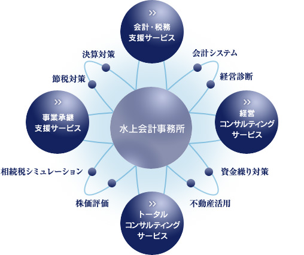
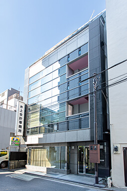

事務所理念 ～「共に咲く喜び」Since 1973～
「発展」という名の花を、企業・経営者の皆様と広げたい。私共は、そう考えます。
花は、一輪でも人々に感動を与えます。その感動を一輪より二輪、二輪より三輪と・・・大きく広げてゆきたい。企業・経営者の皆様と私共の関係もそうありたい。という願いを託したのが、私共の事務所理念「共に咲く喜び」なのです。
メッセージ
お客様の発展をあらゆる面でサポート致します。
我が国の経済構造が低成長時代へ様変わりした現在、各企業・経営者はまさに生き残りをかけた懸命の努力を迫られています。
私どもは、1973年の事務所開業以来、50年以上にわたり、会計・税務業務を通じて経営改善に微力ながら尽くしてまいりました。更なる飛躍のために、人材投資やコンピュータシステムに力を注ぎ、総合コンサルティングとしての体系を確立します。長年にわたり数多くの企業・経営者の貴重なデータを基に、お客様の発展・繁栄を実現するため、情熱をもってお手伝いします。
税理士 水上 邦男（登録番号 29374）
税理士 水上 裕之（登録番号 92260）
税理士 久冨木 基博（登録番号 95839）
税理士 原田 章弘（登録番号 139542）
税理士 小野寺 司（登録番号 137088）
サービス案内
水上会計事務所のサービスでは、一般的な税務顧問・決算申告サービスに加え、3つの"支援"「（1）事業承継対策」「（2）税務調査対策」「（3）資金繰り対策」をサービスの中核とし、お客様の未来への成長戦略のサポートからタックスプランニング・適正な税務申告・資金調達を行うためのアドバイスを行っております。また、税務・会計をベースにした経営改善指導など、企業経営の悩みや課題解決のためのバックアップをタイムリーに行うことを通じて、経営者の良き相談相手となることを目標としております。

事業承継支援サービス
相続対策は相続税対策だけではありません。御一族が長く繁栄できるような方法をお客様と共に考えます。相続税対策、生前贈与対策、事業承継・自社株対策等の相談・実践を主体業務としており、専門ノウハウを多数所有している事務所です。
企業オーナー対策（業務内容）
- 相続税シミュレーション
- 財産目録作成業務
- 遺言作成補助業務
- 自社株対策（評価、種類株その他）
- 後継者対策（内部）・事業承継対策（外部）
- 資産承継対策 他
後継者対策
50年の歴史とノウハウ。親子2代で培った経験でサポートいたします。後継者がおさえておきたい最低限のポイントについての研修を、セミナー形式で行っております。
- 社内体制研修
- 後継者スタッフ研修（管理職研修等）
- 後継者個別研修（リーダー論）
会計・税務支援サービス
原則として毎月お客様の元へ訪問し、会計・税務処理支援を通して、「数字が語りかけるメッセージ」を真心もって提供させていただきます。また、会計ソフトの導入をご検討されているお客様のソフト導入をお手伝い致します。
- 月次税務監査・税務申告業務（請求書・領収書の整理指導、仕訳作成補助、月次試算表の作成・分析、各種申告書・法定調書の作成 等）
- 税務調査業務（日程調整・税務署との折衝、事前チェック、立会い、調査日誌作成、事後チェック）
- 資金繰り対策その他（資金計画の作成補助、融資関係書類作成補助・金融機関紹介、各種届出・保険の検討見直し）
税務判断を事前に検討し書類を作成・完備することで、余分な税金を納める必要がなくなります。電子申告の利用を促進しております。
経営コンサルティングサービス
経営における様々な問題の発見・解決策の提案・業務の改善及び計画の策定をサポートさせていただきます。決算時において、財務格付診断も行っております。
- 長期・中期経営計画の立案（経営診断による現状分析に基づく改善提案）
- 資金調達・資金運用（資金繰り改善のアドバイス、借入・借り換え交渉の支援）
- 会社設立・支援サポート（設立前から設立後まで、創業時に必要な情報とサービスをスピーディに提供）
トータルコンサルティングサービス
お客様の会計・税務に限らない様々な問題をトータルでサポートさせて頂きます。
- オーナー経営者サポートサービス（人事相談、事業計画書・利益計画、株価評価、資産効率改善、相続対策）
- セカンドオピニオンサービス（「わかりやすく、丁寧に」をコンセプトに第三者の意見を提供）
- 海外進出企業の税務に関するサポートサービス（各国のルール・規制に詳しいスペシャリストによる支援）
事務所概要
| 事務所名 | 水上会計事務所 |
|---|---|
| 代表者 | 水上 邦男 |
| 所員数 | 総勢 21名（男性 9名〔うち税理士5名〕、女性 8名、顧問税理士 2名、顧問公認会計士 2名） |
| 設立 | 昭和48年（1973年）9月 |
| 業務内容 | 税務相談及び税務申告、経営診断及び指導・改善、資金繰り相談及び借入書類の作成、事業承継・相続対策、公開支援・国際税務相談、IT関連導入指導、会社の設立及び登記関係業務 等 |
| 所在地 | 〒130-0013 東京都墨田区錦糸2丁目11番7号 |
| TEL | 03-3626-0377 |
| FAX | 03-3626-3336 |
| info@mkfirm.co.jp | |
| 関連 | 株式会社MKプランナー コンサルティング部門として昭和55年（1980年）設立 |
| 社是 | 関与先の発展なくして、事務所の発展なし |
採用情報
水上会計事務所の強み
- 創業50年のノウハウ：50年の長きにわたり、お客様の相談役として問題解決に当たってきたことで養われたノウハウが多数ありますので、大抵の問題は事務所内で対応可能です。
- 内部・外部のブレーン：一人では判断できない案件は、いつでも周囲の上司や同僚に相談、解決することができます。税務署OBの顧問税理士、その他の外部ブレーンに確認することもできます。
- 様々なことを経験できる環境：法人の月次、決算やお客様への訪問等の一般的な業務だけでなく、税務調査の立ち合い・交渉や確定申告、株価評価や相続税申告を中心とした資産税に関する業務に取り組むことができます。
募集要項
| 募集職種 | 税務会計スタッフ |
|---|---|
| 雇用形態 | 1. 正社員 2. パート・アルバイト |
| 業務内容 | 会計記帳、試算表の作成、決算書の作成等税務会計業務 |
| 応募資格 | 日商簿記3級以上、税理士科目合格者優遇、会計事務所での実務経験者歓迎 |
| 勤務場所 | 〒130-0013 東京都墨田区錦糸2-11-7 水上ビル |
| 勤務時間 | 午前8時30分〜午後5時30分（休憩1時間） |
| 給与 | 弊所規定による |
| 休日 | 完全週休二日制、年末年始休暇（確定申告時期でも原則として土日祝日の出勤はありません） |
| 社会保険 | 健康保険、厚生年金、雇用保険、労災保険加入 |
| 応募方法 | 〒130-0013 東京都墨田区錦糸2-11-7 水上ビル 水上会計事務所 採用担当者宛まで、履歴書（写真貼付）及び職務経歴書をお送りください。TEL 03-3626-0377 |
アクセス
- 住所
- 〒130-0013 東京都墨田区錦糸2丁目11番7号 水上ビル
- FAX
- 03-3626-3336
- info@mkfirm.co.jp
- 最寄駅
- JR総武線 錦糸町駅北口 徒歩3分 ／ 東京メトロ 半蔵門線 錦糸町駅 3番出口 徒歩3分
